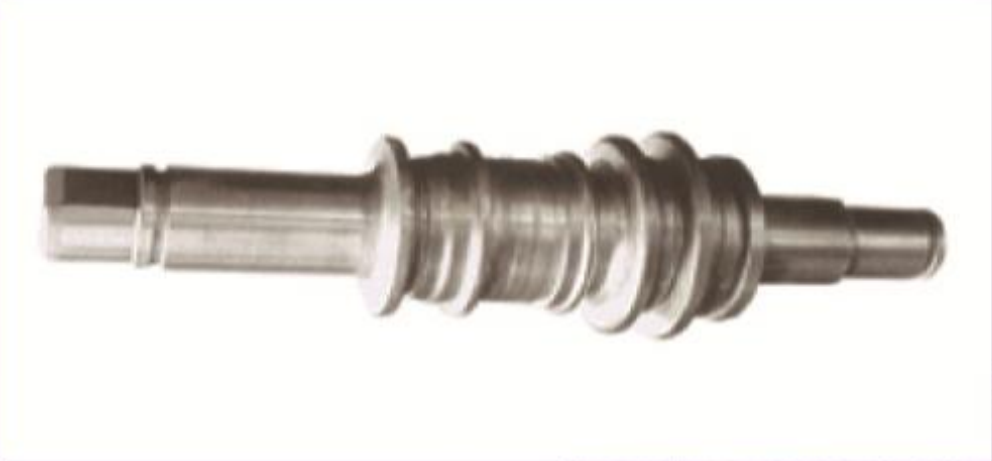
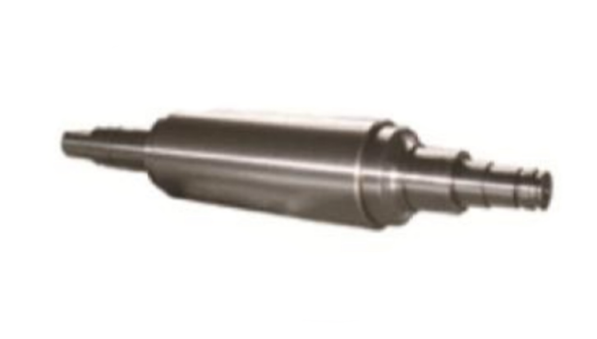

- Metallurgical Rollers
- Large Industrial Grinder
- Special Smelting Equipment
- Roller Workshop Management System
- Grinding Machine Modification Service
- Common Spare Parts for Steel Mills
-

High wear resistance, excellent heat resistance, and high hardness, with a strong ability to form an oxide film. These characteristics improve the flatness control of rolling rolls, enhance accident resistance, and improve surface quality, thereby increasing production output and product yield.
High Speed Steel Roll
-

Alloy ductile iron roll is characterized by the ball-shaped graphite in the matrix, through adjusting the compositions of Ni, Cr, Mo adopting different heat treatment technology, pearlitic ductile iron and acicular constituent ductile iron which are of differenet constitution and different contents of carbides so that it can satisfy different performance of rolls. The roll made of alloy ductile iron is of high strength, less drop of hardness on the work layer, stability under high temperature, good performance of anti-heat impact and resistance to wear.
Ductile Iron Roll
-

High Cr Duplex cast iron is extensively applied as work roll of the finishing front stand of hot strip mill. It offers high wear resistance and thermal fatigue resistance, and features the characteristic that the oxide film formed during steel rolling is less likely to peel off.
Enhanced High Chromium Duplex Cast Iron Roll
-

These rolls are a material type that lies between chilled cast iron rolls and gray cast iron rolls. In addition to excellent wear resistance, they also have good resistance to spalling and thermal cracking.
Alloy Indefinite Chill Cast Iron Rolls
-

These rolls are widely used in universal rolling mills. They are made from a centrifugal composite of highly wear-resistant semi-steel and graphite steel with excellent toughness. The semi-steel structure features 10-20% of carbide distributed intermittently in a mix of bainite and fine pearlite, giving it high comprehensive performance. As a result, special heat treatment equipment and techniques are required during production.
Applications:Horizontal and vertical rolls in universal rolling mills.H-Beam Composite Roll Rings
-

Semi-Steel Rolls
-

Cast Steel Rolls
-

Support Rolls
Background:
Many steel mills in ASEAN, South Korea, India, Taiwan, and other regions initially imported grinders from Europe and Japan. Over the years, the electrical equipment (Siemens) has become severely outdated or obsolete. Some spare parts for the electrical systems are no longer in production, leading to a shortage of necessary components. The precision of mechanical transmission parts has significantly declined, and the overall operating condition of the equipment has become unstable, posing serious safety risks. Additionally, the grinding accuracy of the machines can no longer be effectively guaranteed.
Retrofit Services:
Our company, in collaboration with Guiyang Xianfeng Machine Tool Co., Ltd., can provide comprehensive upgrades for the electrical systems (in cooperation with Siemens) and mechanical repairs for European-imported grinders such as Pomini, Herkules, and Waldrich. We conduct on-site inspections of the current equipment status, procure or manufacture replacement parts for components likely to fail, and then proceed with the integration of all systems.